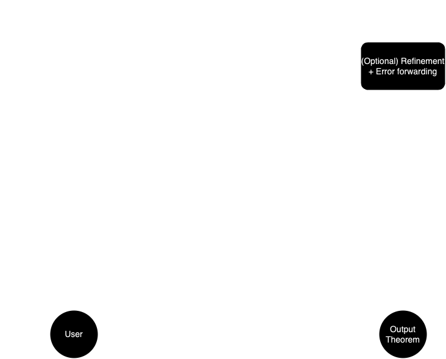

ImProver: Agent-Based Automated Proof Optimization
Automated Proof Optimization is the task of rewriting a formal proof so that it is both correct and optimized for an arbitrary criterion.
We present ImProver, a general LLM agent-based framework that solves this task. Here's an example of ImProver making a lemma from the 2019 IMO Q2 more concise and efficient:
Original (Human-Written)
lemma lemma0 {α : Type} {p : α → α → Prop}
(h1 : ∀ x, ∃! y, p x y)
(h2 : ∀ x y, p x y ↔ p y x) :
∀ x, Classical.choose
(h1 (Classical.choose (h1 x).exists)).exists=x := by
-- PROOF START
intro x
obtain ⟨y, h1e, h1u⟩ := h1 x
have h2' : Classical.choose (h1 x).exists = y :=
h1u _ (Classical.choose_spec (h1 x).exists)
rw [h2']
obtain ⟨w, h1e', h1u'⟩ := h1 y
have h4 := Classical.choose_spec (h1 y).exists
have hxw : x = w := by
apply h1u'
rw [h2]
exact h1e
rw [hxw]
exact h1u' _ h4
ImProver (Length-Optimized)
lemma lemma0 {α : Type} {p : α → α → Prop}
(h1 : ∀ x, ∃! y, p x y)
(h2 : ∀ x y, p x y ↔ p y x) :
∀ x, Classical.choose
(h1 (Classical.choose (h1 x).exists)).exists=x := by
-- PROOF START
intro x
obtain ⟨y, h1e, h1u⟩ := h1 x
rw [h1u _ (Classical.choose_spec _)]
obtain ⟨w, h1e', h1u'⟩ := h1 y
rw [h1u' _ ((h2 _ _).mpr h1e)]
exact h1u' _ (Classical.choose_spec _)
We find that naively applying LLMs to proof optimization falls short, and we incorporate various improvements into ImProver, such as the use of symbolic Lean context in a novel Chain-of-States technique, as well as error-correction and retrieval. 
We test ImProver on rewriting real-world undergraduate, competition, and research-level mathematics problems, finding that ImProver is capable of rewriting proofs so that they are substantially shorter and more readable compared to the raw LLM baseline.
| Metric | Model | Improvement | Nonempty Improvement | Accuracy | Improved Acc. |
| Length | GPT-4o | 3.7 | 15.15 | 26.36% | 8.31% |
| Length | ImProver | 20.96 | 55.29 | 100.0% | 35.44% |
| Readability | GPT-4o | 2.21 | 8.02 | 18.75% | 6.13% |
| Readability | ImProver | 9.34 | 30.53 | 100.0% | 24.56% |
Check out our code and run ImProver yourself here, or keep exploring to learn more about ImProver.
Recent Activity
Official Release
ImProver has been officially released!
ArXiV
ImProver is officially in preprint
ICLR
ImProver has been submitted for ICLR 2025
MAI @ NeurIPS2025
ImProver has been submitted for the Math for AI workshop at NeurIPS 2025
Github
ImProver is now Open-Source